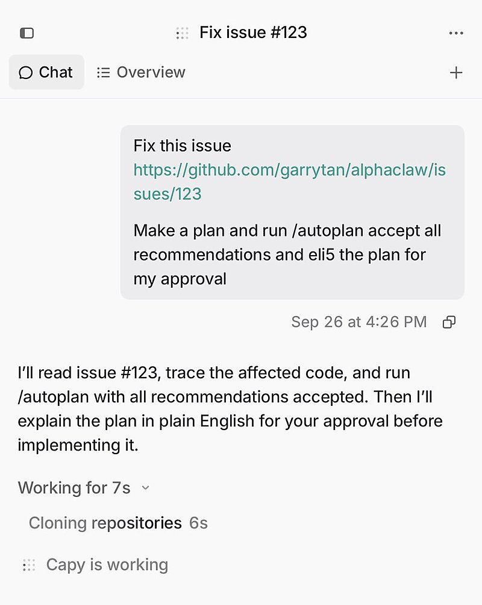
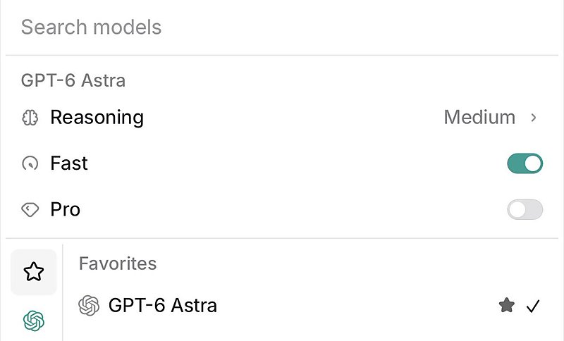
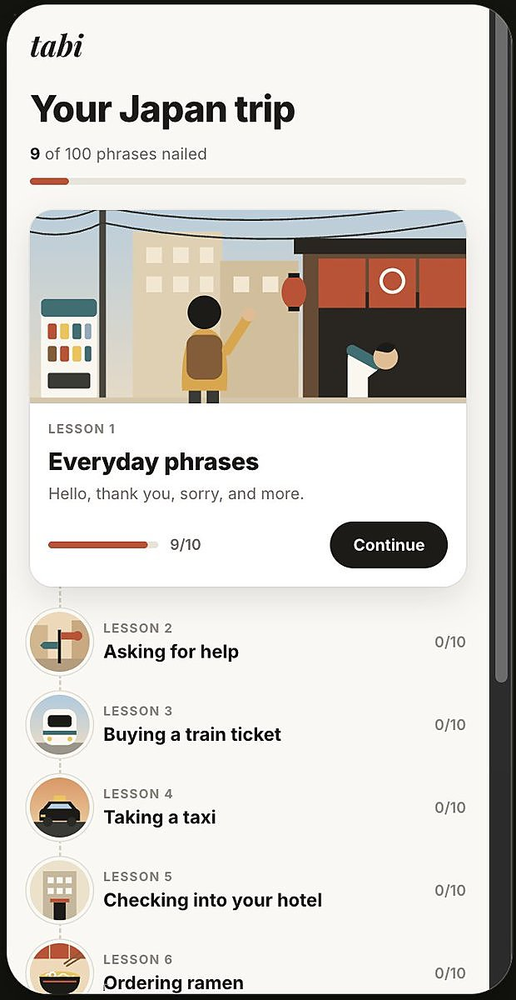

AI 日报 · 9月28日
从扩散推理到 Agent 实验，AI 进展更需要证据链
No Priors 讨论扩散语言模型的并行推理，Builder 展示真实工作流；官方研究与开源项目提醒我们核对速度、质量和实验边界。
扩散推理
Agent 工作流
科研验证
GitHub Trending
5
Builder 动态
6
热门项目
4
官方与 RSS
1
深度对话
今日要点
Rauch 对 AI 文字质量提出警醒。 一则性能优化帖把效果归因于编译器，但其 PR 描述指向算法和数据结构变化；读者应追溯原始改动。
深度对话
No Priors：扩散模型能否改变 AI 推理成本
9 月 18 日，Sarah Guo 对谈 Inception 联合创始人兼 CEO Stefano Ermon。节目讨论扩散语言模型为何可能在文本与代码生成中获得更高并行度；以下数字均为受访者对其研究的描述。
顺序生成的瓶颈
Ermon 解释，自回归模型生成时逐 token 依赖此前输出，推理工作负载因此较难充分利用 GPU 并行计算。
扩散路径的实验
他称团队在 2024 年的 GPT-2 规模研究中，以相同数据和参数量达到相近困惑度，并观察到约 10 倍的文本生成速度；这不能直接外推到更大的商用模型。
关键判断仍待规模化检验
Inception 正尝试扩大扩散语言模型规模。Ermon 认为每美元和每瓦特获得的推理能力会成为重要竞争维度。
RSS 精选
官方发布与订阅源
Anthropic｜Claude 发现候选酶系统
Anthropic 9 月 23 日披露：Claude Agent 在反转录酶相关序列中识别出重复 DNA 阵列，研究团队在实验室继续验证。官方明确表示，ART 系统的主要功能尚未确定。
Google｜Gemini 扩展连接应用
Google 9 月 23 日宣布，Gemini 开始逐步接入 Airtable、Linear、Adobe、Webflow 等生产力与创作应用；可用性以实际推出范围为准。
建造者动态
Builder 观点与实践
Guillermo Rauch｜AI 文字需要能经得起核对
Rauch 以一则“编译器带来性能提升”的传播案例提醒读者：当 PR 描述本身指出改进来自算法与数据结构时，应核对因果归因。他担心大量未经验证的 AI 文字会消耗读者对技术内容的信任。
Garry Tan｜用规划命令处理生产问题
Tan 展示自己用 Capy 与 GStack 的 /autoplan 处理生产故障，并标明使用 GPT-6 中等推理强度。这是个人工作流展示，帖子没有提供可推广的修复成功率。


Peter Yang｜用 Gemini 音频接口做日语练习
Yang 正在构建会话日语练习应用，计划安排 10 节课、每节 10 个短语。原帖配图展示了个人原型；这是一项开发中的尝试。

Thariq｜回看用 Claude Code 制作视频
Thariq 回顾约一年前用 Claude Code 做视频的经历：每条成片都经过较长时间迭代，需要他指出细节错误。帖子强调成品背后的人工反馈过程。
Dan Shipper｜把《普罗泰戈拉》改编成短片
Shipper 称先写了柏拉图《普罗泰戈拉》的小说化文本，再让 Opus 5.5 生成短片；帖子发布了第二幕视频。可在原帖直接查看成片。
GitHub Trending
当日值得看的开源项目


项目来自 9 月 28 日 GitHub Trending 当日列表；星标与 Fork 数为同日 10:02（北京时间）GitHub API 快照，会持续变化。
今日思考
速度、准确性和证据链要一起看
更快生成代码、文字和视频，可以扩大探索范围；公开传播的技术结论仍需对应原始改动、测量条件与人工复核。今天最值得带走的习惯是：先找到实验或代码中的因果证据，再复述漂亮的性能数字。查看 Rauch 的原帖 →
今日一问：你最近转述的一项 AI 性能结论，是否能追溯到原始实验条件？
今日一问：你最近转述的一项 AI 性能结论，是否能追溯到原始实验条件？
参考来源
Guillermo Rauch：AI 文字与性能归因
Garry Tan：生产故障工作流
Peter Yang：日语练习原型
Thariq：视频制作回顾
Dan Shipper：短片第二幕
No Priors：Stefano Ermon 对谈
Anthropic：候选酶系统研究
Google：Gemini 连接应用
AI前线：9 月 27 日周报
AIGC Weekly：第 38 周周刊
GitHub：9 月 28 日 Trending
paperclipai/paperclip
vectorize-io/hindsight
debpalash/VoiceStudio
vercel-labs/scriptc
mvschwarz/openrig
dream-num/univer